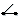

Im Fenster "Schalter" legen Sie fest, welche nachfolgenden Elemente in einer aktiven kinematischen Kette ein- oder ausgeschaltet werden können.
|  | In der Baumstruktur werden Schaltelemente mit diesem Symbol gekennzeichnet. |
Parameter | Bedeutung |
|---|---|
Name | Bezeichnung, die in der Baumstruktur angezeigt wird. |
Nummer | Index des Schalters in einer kinematischen Kette (im Standard = -1 ist der Schalter konstant eingeschaltet). |
Stellung | Wert, bei dem der Schalter eingeschaltet werden soll. |
Siehe auch:
Kinematisches Kettenelement anlegen